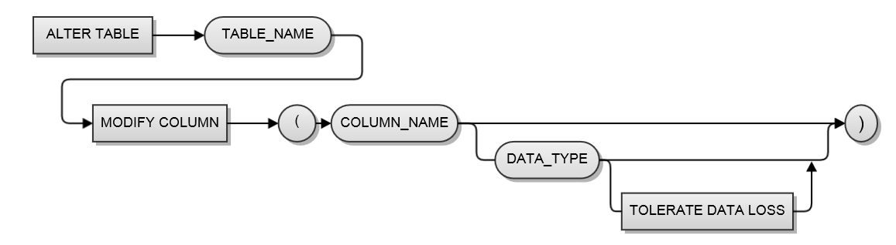

Version
Starting from Altibase HDB version 5.3.3 or later, the column type and length of a table can be modified by using the ALTER TALBE ~ MODIFY COLUMN ~ statements.
Statement
ALTER TABLE table_name MODIFY COLUMN ( column_name column_type(length) )

TOLERATE DATA LOSS Option
If the table data is not NULL, data loss may occur depending on the conversion type. In order to change the data type at the expense of this data loss, TOLERATE DATA LOSS option can be used.
Conversion of DATE type
When the DATE type is changed, the column data is converted according to the DEFAULT_DATE_FORMATE property.
Precaution
If used incorrectly, the column modify command may cause a load on the DB depending on data loss and the amount of data in the target table, so it should be used with precaution.
- Cannot reduce the column size below the original size
- If the data type of a column is changed, data loss may occur depending on the data type. If the user wants to change the data type at the expense of this data loss, the TOLERATE DATA LOSS option can be used.
- When operating with the target table for replication, it must follow the DDL operation procedure in a replication environment. Please refer to the DDL procedure for the Altibase replication target table.
- If there are many rows in the target table, there may be a delay in operating time and an increase in usage of the logs area.
Example
<Query> Change the isbn column of the table book to CHAR(20) type and the edition column to BIGINT type.
iSQL> ALTER TABLE book MODIFY COLUMN (isbn CHAR(20), edition BIGINT); |
<Example> Below is an example of executing the above query.
iSQL> create table t1(c1 integer); |
Reference
For more detailed information on how to use it, refer to how to use modify columns in the SQL Reference Manual.
{kind=link}